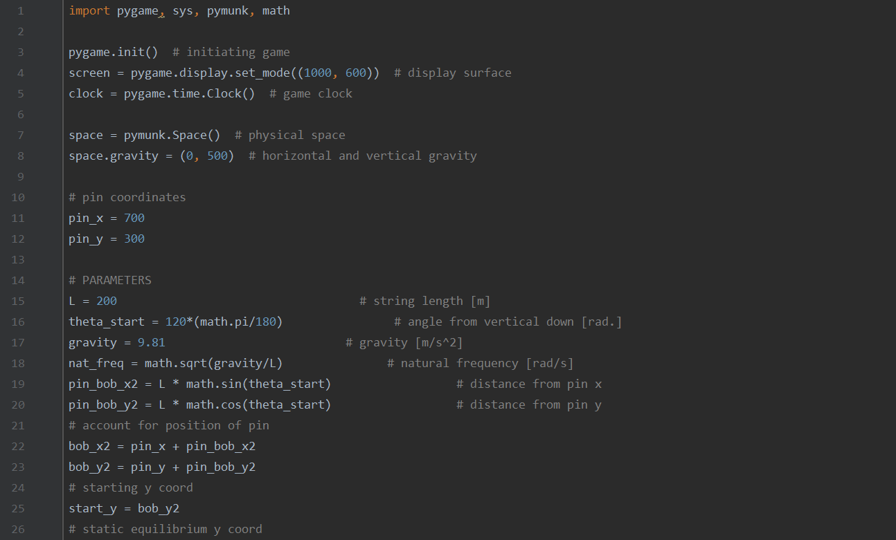
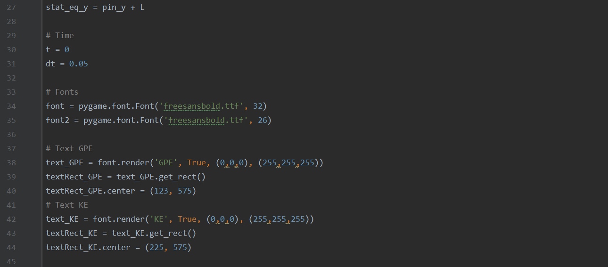
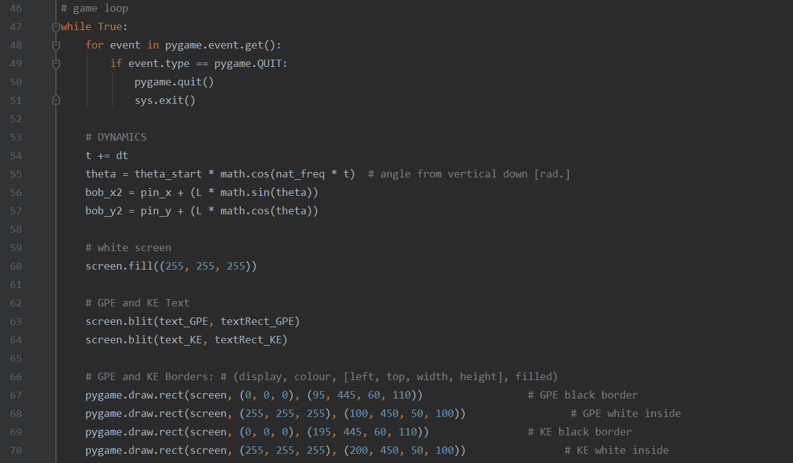
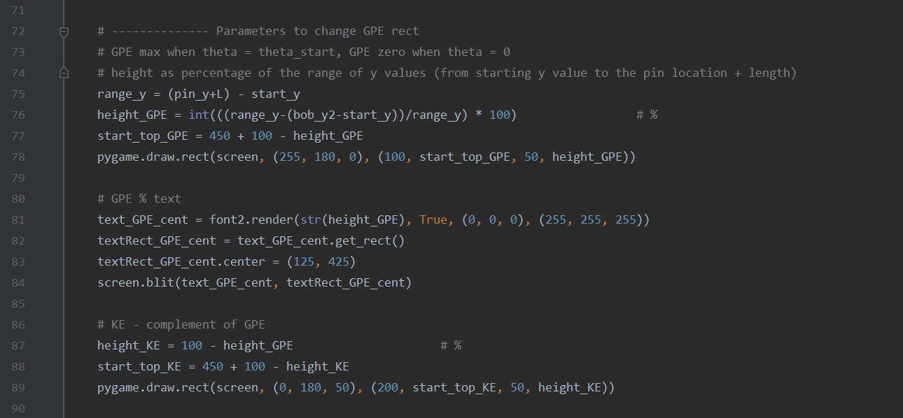
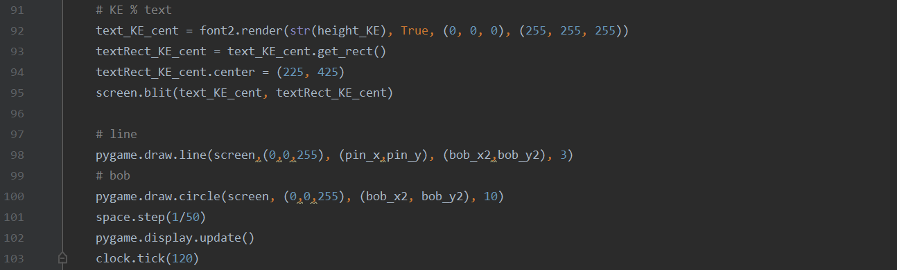

Find below the code used to create the animation of a simple pendulum shown in the Simple Pendulum Tutorial.
Simple Pendulum Simulation
Animation
The animation shown in Figure 1 was created using the Pygame library for Python.
Python Code
Figure 2 displays the Python code, written by myself, used to create the animation.




